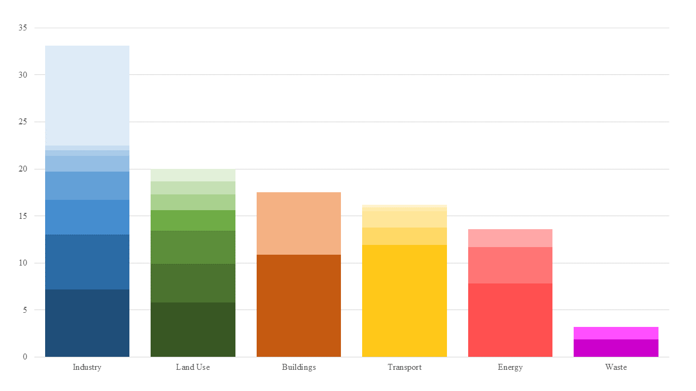
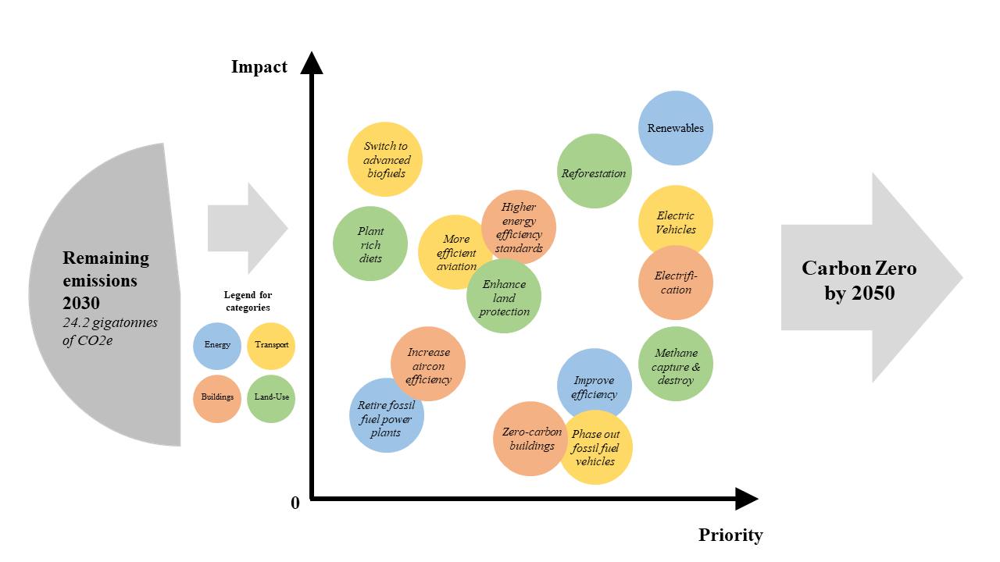

Net zero carbon describes strategies to first reduce and build towards zero carbon. Information about carbon emissions is presented in various formats and they come together to tell a story about getting the world to net carbon zero.

Above: Original net carbon zero viz.
Above: Improved stacked bar chart.
| Story flow | Critique | Improvement |
|---|---|---|
|
Carbon emissions
This part aims to show the main contributors of carbon emissions and their respective smaller contributors. |
Clear quantitative values Data on percentages and contributors are clear and consistent across all different fields. Colour works In this case, the colours work well in separating the main contributors. Perhaps colours could be chosen to have more contrast. Bad display of relative percentages Using rectangle sizes is really bad in showing relative differences. It is difficult to read size on 2 dimensions and we need to constantly refer to the numbers. |
Stacked bar chart Stacked bar charts are better for visualising the data. The smaller contributors are coloured using different hues of the main colour groupings. Clearer visual sizing At one glance, the relative contributions by each category is clearer. The relative sizing is obvious and the relative contributions from smaller groupings can also be visually inspected. |

Above: Original net carbon zero viz.

Above: Improved pie chart.
| Story flow | Critique | Improvement |
|---|---|---|
|
Carbon reduction
This part shows potential areas for reducing emissions from the different main contributors. |
Clear quantitative values? The quantitative percentages are uniformly presented. However, percentages are relative and it is difficult to compare across different contributors as they have different initial contributions. The most important statistic for halving emissions is a small bar at the bottom. Colour works In this case, the colours work well in separating the main contributors. Perhaps colours could be chosen to have more contrast. Bad display of relative percentages Using circle sizes is really bad in showing relative differences. It is difficult to read size on 2 dimensions and we need to constantly refer to the numbers. |
Pie chart The idea of halving emissions is clearly shown by the pie size. We can also clearly see categories which contribute to this halving. Clearer visual sizing At one glance, the relative contributions by each category is clearer. The relative sizing is obvious and the relative contributions from smaller groupings can also be inspected by hovering over the slices. |

Above: Original net carbon zero viz.
Above: Improved scatter plot.
| Story flow | Critique | Improvement |
|---|---|---|
|
Zero carbon
This final part wants to show different ways of reaching net zero by 2050. |
Ideas as data The data in this case are the different ideas and stratgies. Data is arranged based on priority and sized by impact factor. Confusing hierachy The data in this case are all qualitative. This is the chance to use the rectangles and circles from previous parts. However, this graphic follows a stacked bar method (Which is better for quantitive data). Mixture of idioms This is sort of a stacked bar, has a colour scale and a linear priority y axis. Difficult to comprehend. |
Scatter plot Using impact and priority as axis, the ideas can be arranged to demonstrate their relevance. Link to previous visualisations Instead of 3 distinct charts, we can link the reduction to the previous aim in 2030. The flow of arrows then combine to suggest a progress towards carbon zero in 2050. |
Assignment 5 - Ling Ban Liang